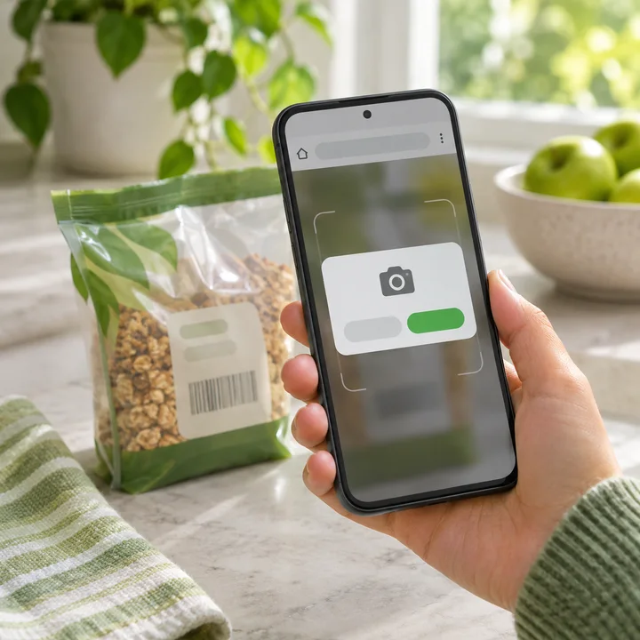

La caméra ne s’ouvre pas dans le navigateur ? Voici comment la réactiver
Vérifiez les autorisations de Chrome sur Android et les réglages de Safari sur iPhone avant de scanner un code-barres.

Sur Android avec Chrome
Ouvrez le site, touchez l’icône à gauche de l’adresse et cherchez les autorisations. Si la caméra est bloquée pour ce site, modifiez le réglage et réessayez. Si Chrome lui-même n’a pas accès à la caméra, vérifiez les autorisations de l’application dans les paramètres Android.
Sur iPhone avec Safari
Ouvrez le site dans Safari, touchez le menu de la page, puis ouvrez les réglages du site web. Vérifiez l’accès à l’appareil photo pour ce site et relancez le scan. Dans EatMeFirst, vous pouvez aussi taper les chiffres sous le code-barres et lancer la recherche en ligne.